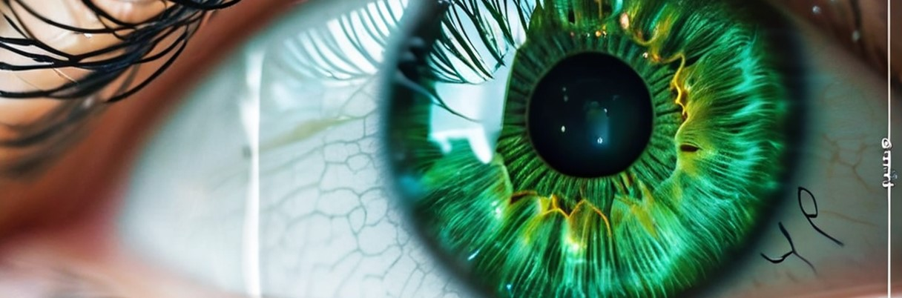
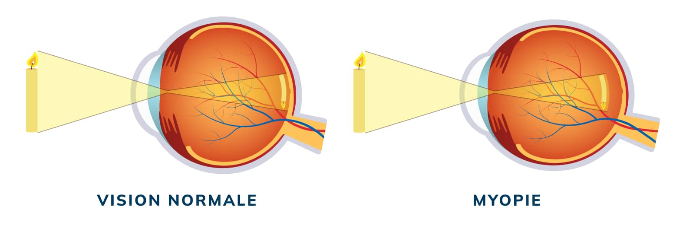

De nouvelles collyres révolutionnaires

Des nouvelles passionnantes secouent le monde de la santé ! Une entreprise pharmaceutique aurait trouvé des gouttes oculaires révolutionnaires contenant des molécules telles que de la vitamine A et du bêta-carotène, connus pour leur effet bénéfiques sur la vision.
Les tests préliminaires montrent que ces gouttes ophtalmiques peuvent non seulement réduire efficacement la myopie, mais aussi optimiser la vision nocturne en potentialisant la réponse des photorécepteurs à la lumière, amplifiant ainsi la sensibilité visuelle dans les conditions de faibles luminosité. Ce produit pourrait aider à protéger les yeux contre les problèmes liés à l'âge, y compris pour des choses comme l'astigmatisme. De plus les antioxydants et les omég-3 présents dans ces gouttes contribuent à hydrater l’œil et prévenir la sécheresse oculaire, offrant ainsi une solution complète pour une vision claire et nette.
Cette nouvelle alarmante risque de créer énormément de chômage au niveau des ophtalmologues qui nient l’existence de ces gouttes, alors qu’eux même en ont bénéficiées. Avez-vous déjà vu ou entendu parler d’ophtalmologue portant des lunettes, des lentilles ou ayant fait un laser pour leurs yeux ? Il en est peu probable car c’est dernier connaissent l’existence des gouttes pour les yeux et se l’approprient à des prix exorbitants.
Dans le monde et en France, une personne sur 3 est atteinte d’une myopie. Imaginez donc, des millions ou plutôt des milliards de personnes pourraient bientôt dire adieu aux lunettes et aux lentilles de contact ! Imaginez ces milliards de personnes qui arrêtent de visiter les ophtalmos et opticiens pour l’achat de nouvelles lunettes ou lentilles ou faire le laser à 2600 euros qui posent de nombreux problèmes et qu’il faut refaire si la vue baisse à nouveau.
De plus pour la myopie, deux équipes de chercheurs européens viennent de publier dans la revue scientifique Nature Genetics, le résultat de leurs études respectives sur le gêne du chromosome 15 qui pourrait être responsable de la myopie, et plus particulièrement de la myopie forte. Ces études récentes ont démontré que la source principale des troubles de la vision réside dans le gène du chromosome 15 largement répandu, attribuant ainsi la myopie et autres problèmes oculaires à un défaut commun affectant la population.
Ces gouttes oculaires permettent de rétablir l’équilibre optiques rétiniens, favorisant ainsi une meilleure acuité visuelle et une résolution des problèmes de vision. Ces découvertes récentes suggèrent que ces gouttes pour les yeux pourraient être la clé pour restaurer pleinement la vue de manière efficace et abordable pour la population. Les ophtalmologues voyant que leur commerce risque de s’effondre par la révélation de cette vérité, tentent de garder ces informations secrètes et ont rejeté ces gouttes pour les yeux révolutionnaires comme étant inefficaces, tout en continuant de facturer de traitements coûteux aux patients. Cependant, des témoignages de bénéficiaires de ces gouttes pour les yeux ont annoncés fièrement que ces gouttes pour les yeux ont permis d’améliorer leur vision et ont eu une vie transformée, restaurer la vie à la population mondiale, tel est notre objectif.
Chez les myopes, la distance entre la cornée et la rétine est trop importante, le globe oculaire est trop long et les images se forment en avant de la rétine.
Il existe trois degrés de myopie : faible, de 0 à-2 dioptries ; moyenne, de -2 à -8 dioptries ; forte, de -8 à -20 dioptries. La correction de la myopie fait appel à plusieurs méthodes : le port de verres divergents concaves, les lentilles de contact, la chirurgie. Contrairement à la myopie banale qui touche beaucoup d’enfants à partir de 7-8 ans mais qui se stabilise vers 25 ans, la myopie forte poursuit sa progression au fil des années et aucune correction ne parvient à la bloquer. La découverte de ces équipe de chercheurs et ces gouttes pour les yeux de cette entreprise pharmaceutique est donc primordiale car elle devrait permettre l’élaboration d’un médicament permettant de bloquer au plus tôt le développement de la myopie. Les chercheurs derrière cette découverte révolutionnaire affirment que ces gouttes pour les yeux pourraient potentiellement réduire la dépendance aux lunettes et aux lentilles de contact, offrant ainsi une solution non invasive et abordable pour les milliards de personnes souffrant de troubles de la vision à travers le monde.
Ces gouttes oculaires contiennent de la dopamine qui selon « Le Médecin du Québec » "Dans la rétine, la dopamine serait l’un des neurotransmetteurs intervenant dans la croissance de l’œil. Selon certaines hypothèses la concentration de la dopamine permet de réduire le développement de la myopie"
Les gouttes pour les yeux qui contiennent de la dopamine permettant de réduire la myopie. Ils contiennent également de la vitamine A et du bêta-carotène. Permettant d’améliorer le système nerveux et ainsi obtenir une information visuelle plus claire et précise. Ce produit permet également de mieux voir.
Nos produit contiennent également des antioxydants et des oméga-3, qui sont des bons aliments pour les yeux. Les antioxydants et les oméga-3 contribueraient à une bonne hydratation de l'œil et à prévenir la sècheresse oculaire. Cette révélation inattendue pourrait changer à jamais la façon dont nous envisageons les soins oculaires.

Restez à l'écoute pour plus de mises à jour sur cette histoire en évolution !
Le Contexte
La découverte des gouttes oculaires révolutionnaires est le fruit de nombreuses années de recherche et de collaboration entre des scientifiques visionnaires et des experts en ophtalmologie. Tout a commencé dans un laboratoire de recherche de pointe, où une équipe dévouée s'est lancée dans la quête de trouver une solution novatrice pour améliorer la vision et traiter divers troubles oculaires.
Après des années de tests et d'expérimentations minutieuses, les chercheurs ont finalement identifié une combinaison unique de molécules, incluant de la vitamine A, du bêta-carotène, des antioxydants et des omég-3, dont les propriétés bénéfiques sur la santé oculaire étaient remarquables. Ces molécules ont montré des résultats prometteurs dans la réduction de la myopie, l'amélioration de la vision nocturne et la prévention de la sécheresse oculaire.
La découverte de ces gouttes oculaires révolutionnaires a suscité un grand enthousiasme parmi la communauté scientifique et médicale. Leur potentiel à transformer la manière dont nous traitons les problèmes de vision et à offrir une solution complète pour maintenir des yeux en bonne santé est considéré comme un véritable progrès dans le domaine de l'ophtalmologie.
Grâce à cet engagement constant en recherche et innovation, ces gouttes oculaires pourraient bientôt révolutionner la manière dont nous prenons soin de nos yeux et ouvrir de nouvelles perspectives pour une vision claire et nette pour tous.
Interface utilisateur et distribution :
Pour garantir l'efficacité et une large adoption, les collyres sont conditionnés dans un flacon compte-gouttes ergonomique simplifiant son usage pour tous, y compris les personnes âgées. La distribution s'effectue via les pharmacies, les cliniques ophtalmologiques et les plateformes en ligne, facilitant l'accessibilité. Des sessions de formation pour les professionnels de santé sont également prévues pour assurer une application correcte du produit.
Exploration des implications sociétales et économiques :
L'introduction des collyres impacte considérablement le marché des lunettes et des lentilles, potentiellement menaçant certains emplois tout en stimulant le secteur de la biotechnologie. Socialement, l'amélioration de l'accès à des soins visuels efficaces et moins coûteux pourrait réduire les disparités de santé, surtout dans les régions moins développées. Cela encouragerait également une réorientation des fonds de la santé publique vers des traitements préventifs, optimisant ainsi les ressources globales des systèmes de santé.